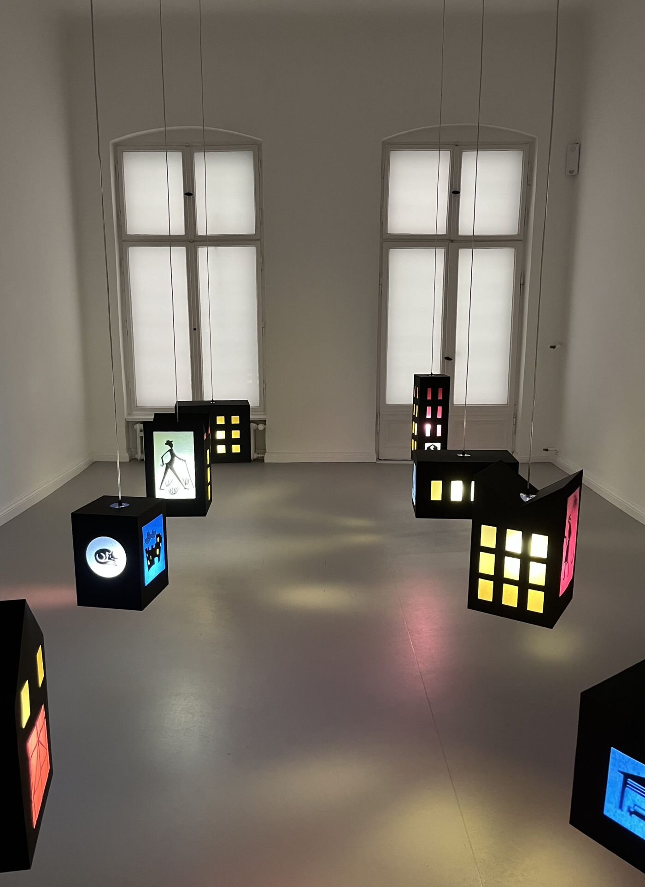
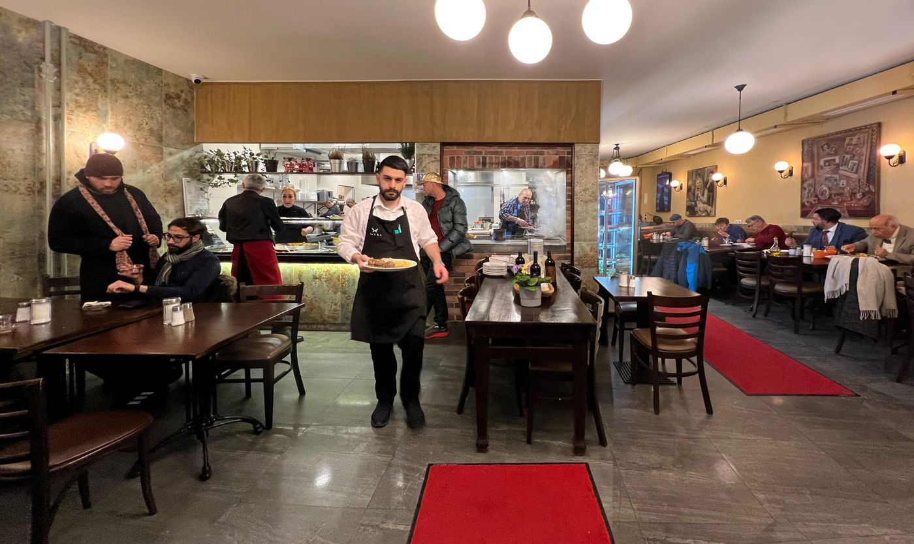

Spaziergang
Park, dann die Straße nach Süden
Vormittags, eine Stunde ohne Umweg. Park, dann die Straße, dann essen.
Essen. Sofram, Potsdamer Straße 137. Türkisches Familienrestaurant am Südende der Straße. Die Geschwister betreiben es, die Küche ist täglich frisch. Öffnungszeiten
Stopps
- Gleisdreieck

Kiez mit Kind: Spielplatz Kinderzimmer - Potsdamer Straße

Art Week Impressionen (3) - Sofram Öffnungszeiten

Sofram das türkische „Tischlein deck dich“ in der Potse
Gelesen
Der Vormittag, den diese Seite vorschlägt, quert den Park und kommt auf die Potsdamer Straße. Was die Beiträge dazu wirklich beschreiben, sind drei verschiedene Dinge, nicht eine durchgehende Wegbeschreibung.
Im Gleisdreieck ist es im Juli 2026 der Spielplatz Kinderzimmer. Kein Geheimtipp, schreibt die Serie, aber auf der Schöneberger Seite vielen unbekannt und bei schönem Wetter oft nicht so voll wie andere, weil er nicht an einem Hauptweg liegt und etwas abgelegen hinter dem Spektrum. Für den Sommer eine Pumpe mit doppeltem Wasserlauf und mehreren Zwischenbecken, Staudämme, Kanäle, Boote, auch für die Kleinsten erreichbar. Die Pumpe sitzt so nah am Holzbrett, dass man dort kein frisches Wasser zum Händewaschen zapfen kann. Zwei große Sandflächen, drei Rutschen, Wippplatten, drei klassische Schaukeln, eine Netzschaukel, eine Babyschaukel, ein Schaukelseil, Klettern und Balancieren. Holzverschläge, hinter denen der Platz nicht ganz einsehbar ist, Hörröhren für Absprachen, ein Holzzaun. Mehr als die Hälfte im Schatten der Silberpappeln. Tische mitten auf dem Platz. Kleinere Äste und Mulch. Einpacken: die nächsten Läden diesseits der Großbeerenstraße sind Parkgenuss am Stangenwald und TorEins.
Auf der Straße zählt Paul Enck am 13. September 2025, während der Art Week, neun Galerien allein in den Mercator-Höfen, drei davon in der Villa 81B. Im Erdgeschoss die Galerie Reiter: die dänische Künstlerin Mette Homar, Jahrgang 1974, Gemälde nach Landschaftsfotografien ihrer Heimat Ahl, oft dieselbe Landschaft zu verschiedenen Tages- und Jahreszeiten, von fern an japanische Gemälde erinnernd. In der ersten Etage Thomas Schulte: Julian Irlinger, Jahrgang 1986, aus Erlangen, die Installation Sleepwalkers, Papierlaternen in Form von Architekturmodellhäusern, Grafik, ein Videofilm. Das Thema, im Beitrag zitiert: Nachkriegsmoderne als eine Linse, durch die sichtbar wird, wie kulturelle Erzählungen konstruiert werden, zirkulieren und als Instrumente des Lernens oder Glaubens aufgenommen werden. Im Obergeschoss Hua International: der chinesische Künstler Tong Kunniao, Jahrgang 1990, „After the Waves and the Dusk“, Phantasien einer Welt im Jahr 3000, in und auf einem Meer von Watte. Seine Ästhetik, wieder zitiert, sei emotionale Szenografie, Ritual statt Monument.
Essen ist das Sofram, Potsdamer Straße 137, in einem Beitrag von Peter Fabian vom 17. April 2023. Muzaffer Yavuz kommt aus Ankara. Fabian erzählt die Stadt über den Anker des Königs Midas, Ankyra. Yavuz selbst findet 1989 in Charlottenburg seinen Anker und nennt das erste Restaurant „Angora“, wie Ankara zu Lebzeiten seiner Eltern noch hieß. Zum Abschluss einen türkischen Mokka, und aus dem Kaffeesatz gelesen, mit optimistischem Blick. Die Tester lobten die anatolische Küche. Die Berliner Zeitung nannte sie „die ultimative Antwort auf den Döner“. 2004 zieht er nach Schöneberg in die Potsdamer Straße und nennt das Lokal Sofram, nach „Açil Sofram, Açil!“, der türkischen Entsprechung von „Tischlein deck dich“. Betrieben von den vier Familien der Geschwister. Küchenchefin ist seine Frau Seher, der Vorname heißt „Morgenröte“. Die Hausgerichte täglich frisch. Der Holzkohlengrill ist Männersache und kam 2022 mit der technischen Modernisierung und den neu gestalteten Gästeräumen ins Haus. „Yavuz“, schreibt Fabian, steht im Türkischen für „schön“ und „großzügig“. Warme Küche in diesem Beitrag Montag bis Samstag 10 bis 23 Uhr. Fabian selbst hat seit zwanzig Jahren Kunstverlag und Redaktionsbüro in der Potsdamer Straße 73. Was abseits dieser drei Stücke liegt, wartet.